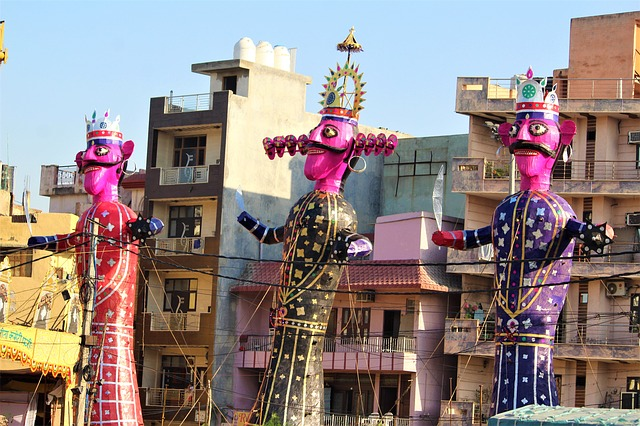

DUSSEHRA

Dussehra (tenth day) is one of the significant Hindu festivals, celebrated with much joie de vivre in the entire country. The occasion marks the triumph of Lord
Rama over the demon king, Ravana, the victory of good over evil. Brilliantly decorated tableaux and processions depicting various facets of Rama's life are taken out. On the tenth day, the Vijayadasmi day, colossal effigies of Ravana, his brother Kumbhkarna and son Meghnad are placed in vast open spaces. Rama, accompanied by his consort Sita and his brother Lakshmana, arrive and shoot arrows of fire at these effigies, which are stuffed with explosive material. The result is a deafening blast, enhanced by the shouts of merriment and triumph from the spectators.
It is significant that the Lord invoked the blessings of the divine mother, Goddess Durga, before actually going out to battle. In burning the effigies, people are asked to burn the evil within them, and thus follow the path of virtue and goodness, bearing in mind the instance of Ravana, who despite all his might and majesty was destroyed for his evil ways. It must be remembered that Ravana was a great scholar and an ardent devotee of Lord Shiva, but the very powers that were bestowed on him for his steadfast devotion proved to be his undoing, due to his gross misuse of the same. In the months of Ashwin and kartik, Hindus observe a 10 day ceremony of fast, rituals, celebrations, fiests to honor the mother Goddess and triumph of Lord Rama over Demon Ravana. Dussehra also symbolizes the triumph of warrior Goddess Durga over the buffalo demon, Mahishasura. Thus, it is a celebration of victory of good over evil.
This celebration starts from Navratri and ends with the tenth day festival of “Dussehra”. Navratri and Dussehra is celebrated throughout the country at the same time, with varying rituals, but with great enthusiasm and energy as it marks the end of scorching summer and the start of winter season.
The tenth day after Navratri is called Dussehra, on which number of fairs are organized throughout the northern India, burning effigies of Ravana.It is also called “Vijayadashmi” as this day marks the victory of Lord Rama over Ravana. VijayaDashami is considered to be an auspicious day for the Indian householder, on which he worships, protects and preserves 'Shakti' (power). According to Scriptures, by worshipping the 'Shakti' on these nine-days the householders attain the threefold power i.e. physical, mental and spiritual, which helps him to progress in life without any difficulty.
The festival is also celebrated with intense fervour and zest in West Bengal and by the Bengalis nationwide in the form of Durga Puja. The festivities commence on the first night in the month of Ashwin (September-October). The vibrant festivities last for ten days, of which nine nights are spent in worship, 'Navaratri'. The tenth day is devoted to the worship of Goddess Durga, who occupies a special position in the Hindu pantheon of gods and goddesses. She is 'Shakti', the cosmic energy that animates all beings. Beautiful idols of the Mother Goddess are worshipped in elaborate pandals for nine days, and on the tenth day, these are carried out in procession for immersion (visarjan) in a river or pond.
According to a Puranic legend attached to this day, the mighty demon Mahisasur vanquished the gods and their king, Indra, who subsequently fled, leaving behind their kingdoms. They then approached the Holy Trinity, Brahma, Vishnu and Shiva, who decided to destroy the megalomaniac demon, and thus prayed to the divine mother Durga to do the needful. Equipped with lethal weapons, riding a ferocious lion, the Goddess in all her awesome majesty, vanquished the evil one without much ado. This day, thus, also celebrates the magnificence and omnipotence of Goddess Durga.
In Tamil Nadu, the first three days are dedicated to the worship of Lakshmi, Goddess of wealth and prosperity, the next three days to Saraswati, Goddess of learning and arts, and the last three days to Shakti (Durga). In Tamil Nadu, Andhra Pradesh and Karnataka, families arrange dolls (Bommai Kolu) on artificially constructed steps and prepare an elaborate spread of lamps and flowers. Women traditionally exchange gifts of coconuts, clothes and sweets. Scenes culled from various stories in the epics and puranas are displayed. Traditionally, women and children, and now men too, visit their friends and acquaintances during these ten days.
They sing songs, tell stories that the dolls might depict and eat a dish made out of chickpeas (choondal). The whole set up is put up on the very first day of Navaratri. After the Saraswati Puja on the ninth day, the whole set up is taken down on Vijayadasmi. Vijayadasmi is an auspicious occasion for children to commence their education in classical dance and music, and to pay homage to their teachers.
In Punjab, Navaratri is taken as a period of fasting. In Gujarat, the evenings and nights are occasions for the fascinating Garba dance. The women dance around an earthen lamp while singing devotional songs accompanied by rhythmic clapping of hands.
In northern India, the festival wears the colourful garb of Ramlila wherein various incidents from Rama's life are enacted, as is the destruction of Ravana and Bharat Milap, that is the reunion of Ram and his estranged brother Bharat, on the former's return to Ayodhya after 14 years of exile. In the Kulu Valley in Himachal Pradesh, the hill folk celebrate Dussehra with a grand mass ceremony wherein village deities are taken out in elaborate processions. The Dussehra of Mysore is also quite famous where caparisoned elephants lead a colourful procession through the gaily dressed streets
of the city.
In the months of Ashwin and kartik, Hindus observe a 10 day ceremony of fast, rituals, celebrations, fiests to honor the mother Goddess and triumph of Lord Rama over Demon Ravana. Dussehra also symbolizes the triumph of warrior Goddess Durga over the buffalo demon, Mahishasura. Thus, it is a celebration of victory of good over evil.
This celebration starts from Navratri and ends with the tenth day festival of “Dussehra”. Navratri and Dussehra is celebrated throughout the country at the same time, with varying rituals, but with great enthusiasm and energy as it marks the end of scorching summer and the start of winter season.
Tenth day after Navratri is called Dussehra, on which number of fairs are organized throughout the northern India, burning effigies of Ravana.It is also called “Vijayadashmi” as this day marks the victory of Lord Rama over Ravana. VijayaDashami is considered to be an auspicious day for the Indian householder, on which he worships, protects and preserves 'Shakti' (power). According to Scriptures, by worshipping the 'Shakti' on these nine-days the householders attain the threefold power i.e. physical, mental and spiritual, which helps him to progress in life without any difficulty.
The 'Ramlila' - an enactment of the life of Lord Rama, is held during the nine days preceding Dussehra. On the tenth day (Dussehra or Vijay Dasami), larger than life effigies of Ravana, his son and brother - Meghnadh and Kumbhakarna are set to fire.
The theatrical enactment of this dramatic encounter is held throughout the country in which every section of people participates enthusiastically.
In burning the effigies the people are asked to burn them, and thus follow the path of truth and goodness, bearing in mind the instance of Ravana, who despite all his might and majesty was destroyed for his evil ways.
Ram Lila- Depicts A Legendary Story of Lord Rama
The highlight of Dussehra is Ram Lila. It is enacted for 10 days to mark the 10-day battle fought between Rama and Ravana. Ram Lila is generally held in large open grounds that come alive with brightly-lit stalls, rickety giant wheels that might fall apart any minute but never do, merry-go-rounds, brightly-painted manually run mini giant wheels with bucket seats for children. All this is very reminiscent of a country fair. Gigantic effigies of Ravana, Kumbhkarna and Meghnath are erected on the fairgrounds. The grotesque and colourful effigies, generally filled with crackers, are set ablaze on Dussehra, or the 10th day of Ram Lila. Huge crowds gather around the burning effigies to enjoy the spectacle. Children are especially delighted at the sight and shoot arrows into the exploding effigies.
Ram Lila
Ram Lila is generally held in the evenings, and year after year, people flock in huge numbers to watch the saga unfold, yet once again. In ancient times when it was considered demeaning for women to go up on stage, men performed the female roles. This still happens in most parts of India. Needless to say, the most effeminate and ‘beautiful’ boy is handpicked to enact the role of Sita.
{kind=link}